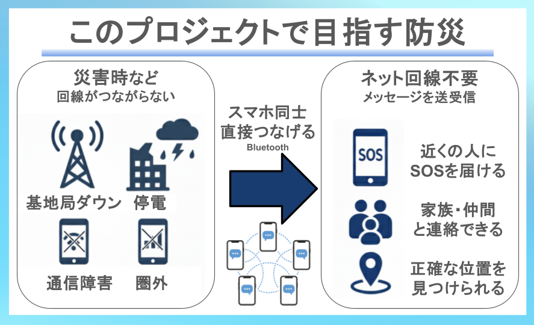

経緯: プロジェクトを立ち上げたきっかけ
災害時の通信途絶──社会的な課題としての現実
日本は地震・台風・豪雨などの自然災害が頻発する国であり、大規模災害発生時には通信インフラの途絶が繰り返し問題になってきました。通信が断たれることは、単に「不便」なだけでなく、被災対応における基礎的な機能を損ないます。
- 東日本大震災（2011年）：固定電話回線では最大で約80〜90％の通信規制が行われ、携帯電話についても広い範囲で通話制限や輻輳が発生しました。
- 令和6年能登半島地震（2024年）：基地局の停電や被害により、一定地域で長期間にわたり通信が途絶し、自治体の情報伝達や安否確認に影響が出ました。
- 各種公的報告：総務省などの調査でも、災害時に固定／移動体通信網やインターネットが一時的に機能しなくなる事例が繰り返し記録されています。
通信の途絶がもたらす具体的な影響には、以下が含まれます：
- 家族・知人の安否確認が困難になること
- 救助要請や緊急通報が届きにくくなること
- 避難所での人数管理や情報共有が滞ること
こうした現実を受け、私たちは「つながらないこと自体が大きな課題である」という認識から出発しました。そこで、基地局やインターネットに依存せずにスマートフォン同士を直接つなぐ通信仕組みの開発に挑戦します。すでに普及している端末を活用することで、追加インフラを最小限に抑えつつ、災害時の通信脆弱性を補完できることを目指します。
目的: 孤立を減らし、安心を届ける“つながる技術”
- 助けを呼べる／連絡できる: SOSをリレー形式で届け、家族や仲間とやり取りできる
- 見つけてもらえる: UWBで数十センチ単位の位置特定が可能
- 避難所で安心して過ごせる: Bluetoothによる自動入退室記録で負担を軽減
活動内容
- アプリを開発する
- 実証実験を行う
- 普及・社会に実装する
成果と社会的効果
オープンソースとして公開し、世界の防災力向上に貢献します。
メンバー紹介
- 小武 右京 – iOSアプリ開発者
- 佐藤 太陽 – アルゴリズム設計担当
- 奥 那々子 – UI・広報担当